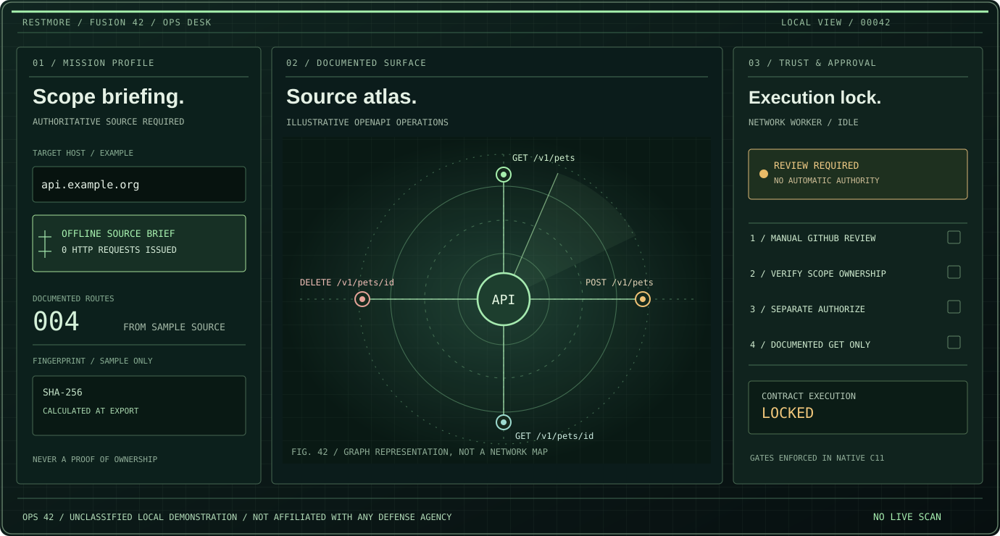
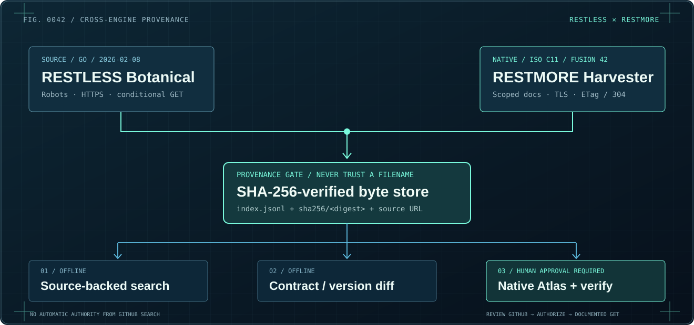

01 / DISCOVERY
⌁
Follow the evidence
Bounded, authorized HTTPS documentation discovery with conservative request limits.
RESTMORE is a native C11 cartographer for documented APIs. Begin with an authorized source. Build an atlas of routes. Inspect the evidence behind every operation.
RESTMORE OPS 42 brings an olive-and-signal-green native C11 command desk, machine-readable offline mission briefings, source fingerprints and enforced human authorization to the API atlas.
ENTER OPS 42 MISSION CONTROL ↗
One instrument. Three views: set the scope, explore declared routes, inspect the source. A schematic presentation of the native C11 interface, using included sample operations.
EXPLORE THE PRODUCT DESCRIPTION ↗
A focused approach to API discovery: start with what a service documents, preserve the source, and make the result usable.
Bounded, authorized HTTPS documentation discovery with conservative request limits.
Understand relationships between routes, methods, and their originating documents.
Export machine-readable catalogs and graphical formats for further inspection.
A live-interaction design preview using illustrative data. Network requests are not made from this page.
Select a route in the map or list to inspect its synthetic documentation record.
/v1/usersA real catalog stores source references and document fingerprints. This web demo never scans a service.
curl -X GET '{{baseUrl}}/v1/users'
Design prototype only. The actual native client runs the C11 engine and uses its own runtime evidence.
Source-of-truth C11 logic. Native raylib visual layer. Cross-platform CMake build definitions. Dependencies and platform-specific packaging remain explicit.
READ THE BUILD GUIDE ↗# Compile the native C11 engine
cmake -S . -B build -DCMAKE_BUILD_TYPE=Release
cmake --build build --config Release
# Run unit tests
ctest --test-dir build --output-on-failure
# Enable the raylib GUI
cmake -S . -B build -DRESTMORE_GUI=ONThe original domain-first crawler, its Botanical SHA-256 evidence ledger and ETag/304 revalidation now connect to RESTMORE's native C11 atlas. Real local TLS integration tests cover cache tampering, authorization and stop-on-error behavior.

Illustrated instructions and a clear product promise, drawn with the same architectural precision as the native interface.
One domain, a human-reviewed GitHub repository search, explicit per-host authorization, and bounded checks against documented GET response contracts. The browser demo remains entirely synthetic.
Type one public HTTPS domain. No guesses, parameters or arbitrary ports.
MAP opens a GitHub repository search first, never an assumed domain owner.
Confirm GitHub review and permission, then click AUTHORIZE for this exact atlas-bound host.
At most five GET checks: status, MIME and basic JSON type. Export a body-free audit JSON.
NATIVE C11 FUNCTION · NO VERIFICATION REQUESTS FROM THIS WEBSITE · READ THE MANUAL ↗
Four downloadable alpha packages, created and verified in GitHub Actions. Desktop archives include the original architectural vector plates, illustrated field guide and product brief. Engineering previews, not production-certified releases.
Native GUI + C11 CLI, with libcurl and Windows Schannel HTTPS.
GET WINDOWS ZIP ↗ 02 / LINUX X86-64⌘LinuxNative raylib GUI, CLI and authorized HTTPS documentation mapping.
GET LINUX ZIP ↗ 03 / MACOS⌁macOSC11 executable and visual atlas with native libcurl support.
GET MACOS ZIP ↗ 04 / ANDROID ARM64⬡AndroidNativeActivity APK, offline OpenAPI preview. Debug-signed; runtime not yet device-tested.
GET DEBUG APK ↗ALPHA 8 · CHECKSUMS INCLUDED ON THE GITHUB RELEASE PAGE ↗ · iOS APP NOT YET RELEASED